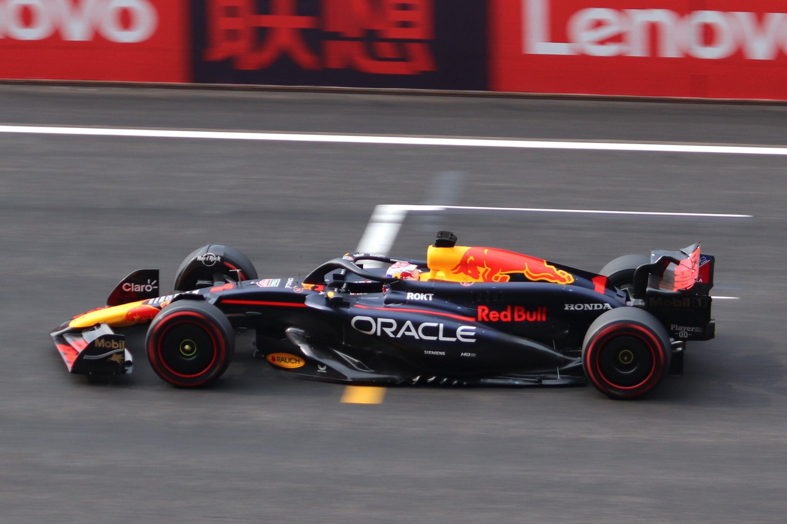

F1 Red Bull Racing Team Member
Driver


1. 맥스 베르스타펜
맥스 베르스타펜 (Max Verstappen)은 현재 포뮬러 1(F1)에서 가장 두각을 나타내는 드라이버 중 한 명으로, 레드불 레이싱(Red Bull Racing) 팀 소속입니다. 네덜란드 출신으로 그의 감각적인 주행 스타일과 놀라운 레이싱 실력으로 F1에서 빠르게 이름을 알렸습니다.
주요 경력
- F1 데뷔: 2015년, 토로 로소(현재의 알파타우리) 팀 소속으로 F1 최연소 드라이버로 데뷔. 당시 나이는 17세였습니다.
- 레드불 레이싱: 2016년 레드불 레이싱 팀에 합류하여, 첫 경주에서 승리하며 포뮬러 1 역사상 최연소 그랑프리 우승자가 되었습니다.
월드 챔피언십
2021년과 2022년에 F1 월드 챔피언 타이틀을 획득했으며, 특히 2021년에는 루이스 해밀턴과의 치열한 경쟁 끝에 마지막 라운드에서 승리를 거두었습니다.
2. 세르지오 페레즈
세르지오 페레즈 (Sergio Perez)는 현재 레드불 레이싱(Red Bull Racing) 팀 소속의 멕시코 출신 포뮬러 1(F1) 드라이버입니다. 그는 1990년 1월 26일에 멕시코에서 태어나, F1에서의 뛰어난 경력과 성공으로 주목받고 있습니다.
주요 경력
- F1 데뷔: 페레즈는 2011년 포뮬러 1에 첫 발을 내디뎠습니다. 이후 여러 팀에서 활동하며 경험을 쌓았습니다.
- 레드불 레이싱: 2021년부터 레드불 레이싱 팀의 드라이버로 합류했으며, 팀에서 두각을 나타내고 있습니다. 그는 2022년 모나코 그랑프리에서 우승하며 F1에서의 최초 승리를 기록했습니다.
Test Driver

이사크 하드자르
이사크 하드자르는 프랑스의 카트 레이서이자 포뮬러 드라이버로, 현재 레드불 레이싱 팀의 테스트 드라이버로 활동하고 있습니다.
경력
- 카트 경주: 어린 시절부터 카트 레이싱을 시작하여 여러 카트 대회에서 두각을 나타냈습니다.
- 포뮬러 레이싱: 2021년 F4 프랑스 챔피언십에서 인상적인 성적을 거두었으며, FIA F3에 진출하여 2022 시즌 2위를 기록했습니다.
Team Management
크리스찬 호너
출생: 호너는 1973년 11월 16일에 영국에서 태어났습니다.
레이싱 경력: 그는 카트 레이싱에서 경력을 시작해 영국 포뮬러 2에서 경주한 경험이 있지만, 드라이버보다는 팀 운영과 관리에 더 큰 관심을 갖게 되었습니다.
레드불 레이싱: 2005년에 레드불 레이싱 팀을 창립했고, 2006년부터 팀 프린시플로 활동하고 있습니다. 팀은 2010년부터 2013년까지 4년 연속 월드 챔피언십을 우승하는 성공을 올렸습니다.
업적
성공적인 팀 운영: 호너는 레드불 레이싱을 세계에서 가장 성공적인 F1 팀 중 하나로 성장시키는 데 중요한 역할을 했습니다. 그의 리더십 아래 팀은 뛰어난 성능과 혁신적인 기술로 유명해져 왔습니다.
RB20
RB20는 레드불 레이싱이 2023 시즌에 사용한 포뮬러 1 자동차입니다. 이 차는 RB19의 후속 모델로, 레드불 레이싱의 팀 구성원들이 성능과 기술적 발전을 이루기 위해 많은 노력을 기울인 결과입니다.
RB20의 주요 특징
- 설계 및 기술: RB20는 레드불 레이싱의 공기역학적 디자인과 기술 혁신을 바탕으로 제작되었습니다. 특히, 차체의 경량화와 공기역학적 성능을 극대화하여 트랙에서의 주행 속도를 향상시켰습니다.
- 파워유니트: RB20는 레드불의 엔진 파트너인 Honda와 협력하여 개발한 파워유니트를 사용합니다. 이 파워유니트는 엔진 성능과 연료 효율성을 극대화하여 레이스에서의 경쟁력을 높이고 있습니다.
- 주행 성능: RB20는 뛰어난 핸들링과 안정성을 제공하여 드라이버들이 높은 속도에서도 경기를 잘 제어할 수 있도록 돕습니다. 이 차의 주행 성능은 드라이버 개인의 스타일에 맞춰 조정 가능하여, 다양한 트랙 환경에 최적화된 성능을 보여줍니다.
- 성공: RB20는 2023 시즌 동안 레드불 레이싱이 여러 차례의 우승을 기록하는 데 기여했습니다. 맥스 베르스타펜과 세르지오 페레즈와 같은 드라이버들이 이 차를 통해 놀라운 성공을 거두었습니다.